The Principles and Techniques of Compilers
编译原理
introduction
Lexical Analysis
一、词法分析器的作用
基本作用
- 读入字符流（用户的输入），组成词素（lexeme），输出词法单元序列
- 过滤空白、换行、制表符、注释等
- 将词素添加到符号表中
- 语法分析器通过调用 getNextToken api与词法分析器交互（获得下一个词法单元）
why独立词法分析器？
- 简化编译器
- 模块化设计（增强编译器可移植性）
词法单元、模式、词素
- 词法单元（Token）：
- <词法单元名（类型）、属性值（可选）>
- 如：<Id：abc>、<Number：123>、<Literal：“xxxx”>
- 语法分析器通过词法单元名确定词法单元序列结构
- 属性：一个模式匹配多个词素时，必须通过属性传递附加的信息
- 用于语义分析、代码生成等阶段
- 属性值通常是结构化数据（多信息）（因为不同目的需要不同属性）
- <词法单元名（类型）、属性值（可选）>
- 模式（Pattern）：
- 描述了一类词法单元的词素可能具有的形式
- 类似于一个类
- 词素（Lexeme）：
- 源程序中的字符序列，和某个词法单元的模式匹配（词法单元的实例）
- 类的实例
二、词法单元的规约（正则表达式）
描述词法单元的方式：（有多种）正则表达式非常棒！
串和语言
- 字母表（Alphabet）：有穷的符号集合
- 如：{0，1}，ASCII，Unicode（即包括各种文字）
- 串（String）：字母表中符号的有穷序列
- 串s的长度|s|
- 空串 $\epsilon$
- 一些术语（以banana为例）
- 前缀：ban、banana、$\epsilon$
- 后缀：nana、banana、$\epsilon$
- 真前缀、真后缀（除掉banana和$\epsilon$）
- 串的运算
- 连接：x和y连接：xy
- 指数运算（幂运算）：$s^0=\epsilon, s^k=ss^{k-1}$(连接)
- 语言的运算（L,M都是语言，见下）
- 并：$L\cup M$
- 连接：$LM={st|s\in L,t\in M}$
- $L$的Kleene闭包：$L^*=\cup^{\inf}_{i=0}L^i$
- $L^0={\epsilon}$
- $L$的正闭包：$L^+=\cup^{\inf}_{i=1}L^i$
- 语言（Language）：某个给定字母表上的串的可数集合
正则表达式
- 字母表$\Sigma$上的正则表达式的定义：
- 基本部分
- $\epsilon$是一个正则表达式，$L(\epsilon)={\epsilon}$
- L(r)=正则表达式r所表达的语言
- 若$\Sigma$上的符号a也是正则表达式，L(a)={a}
- $\epsilon$是一个正则表达式，$L(\epsilon)={\epsilon}$
- 归纳步骤
- 选择：$(r)|(s): L((r)|(s))=L(r)\cup L(s)$
- 连接：$(r)(s):L((r)(s))=L(r)L(s)$
- 闭包：$(r)^:L((r)^)=(L(r))^*$
- 括号：无影响
- 基本部分
- 优先级：（）> * > 连接 > |
- 正则语言：可以用一个正则表达式定义的语言
- 给正则表达式命名
正则表达式的扩展
- 基本运算符：前三种（+括号）
- 扩展运算符：
- 一个或多个实例：单目后缀$^+:r^+=rr^*$
- 零个或一个实例：？
- 字符类
- $[a_1a_2\cdots a_n]=a_1|a_2|\cdots|a_n$
- $[a-e]=a|b|c|d|e$
- 不会使描述能力增强
正则表达式与词法单元的识别
- 词法分析器要求： 检查输入的字符串，在其前缀中找出和某模式匹配的词素
- 首先 正则定义 描述各种词法单元模式
- 定义$ws\to(\text{blank|tab|newline})^+$
- 词法分析器识别出此模式时，不返回词素，直接过滤掉了~
- 二义性：如 id 和 if 等关键字的词法单元模式
- 需要特殊处理（见下）
三、词法单元的识别（状态转换图）
状态转换图
- 状态转换图
- 点（状态State）：
- 表示已读入的符号状态
- 某些状态为 接收状态 和 最终状态，表明已找到词素
- 加上的接收状态表示最后读入的符号不在词素中
- 开始状态（初始状态）：Start边表示
- 边（转换Transition）：从一个状态指向另一个
- 边的标号是一个或多个符号
- 当前状态s，下一个输入符号为a，就沿s离开，标号为a的边到下一个状态
- 点（状态State）：
- 一般是人写正则表达式（比较友好），专门的算法去生成对应的状态转换图（人写不友好）
保留字和标识符的识别
- 保留字也可能符合标识符模式
- 解决方法：
- 在符号表中先填保留字，并知名它们不是标识符
- 为保留字建立独立的、高优先级的状态转换图
词法分析器的体系结构
- 从转换图 构造 词法分析器 的方法
- 变量State记录当前状态
- 一个switch根据State和输入字符转到相应的代码
- 每个状态一段代码，如果未找到对应的转换边（识别失败），则此法错误，需要处理错误！
四、词法分析器生成工具及设计
词法分析工具Lex/Flex
- 通常和YACC/Bison一起使用，生成编译器的前端
- Lex源程序的结构
- 声明部分
- 常量
- 正则定义
- 转换规则
- 模式{ 动作 }
- 模式：正则表达式
- 动作：表示识别到相应模式时采取的处理方式（C代码表示通常）
- 模式{ 动作 }
- 辅助函数
- 各动作中使用的函数
- 声明部分
- Lex中冲突解决方法
- 冲突：多个输入前缀与某个模式相匹配，或一个前缀与多个模式匹配
- 多个前缀可能匹配：选择最长的前缀
- 前缀和多个模式匹配：选择列在前面的模式
- 冲突：多个输入前缀与某个模式相匹配，或一个前缀与多个模式匹配
五、有穷自动机
-
本质和状态转换图相同，但只回答Yes/No
-
两类：
- 不确定的~（NFA)：一个符号可出现在离开同一状态的多条边上，$\epsilon$可做标号（可能跳到多个状态？状态不唯一？）
- 确定的~(DFA)：对每个状态及符号，有且只有/最多只有一条边
-
两种自动机都识别正则语言
- NFA,DFA都可以识别正则表达式可描述的语言，反之亦然
- 识别：判定一个串是否属于对应正则语言
- NFA,DFA的表达能力是等价的~
-
NFA（不确定）：
-
有穷状态机和 S
-
输入字母表$\Sigma$
-
转换函数对每个状态和$\Sigma\cup{\epsilon}$中的符号，给出相应的后继状态集合
-
$s_0$为开始状态
-
S 的一个子集 F 被指定为接受状态集合
-
输入字符串的接受：
- NFA接受输入字符串x：转换图中存在一条从开始状态到某个接受状态的路径（路径上的标号连接为x，忽略$\epsilon$)
- NFA接受的语言：从开始状态到接受状态的所有可能路径的标号串的集合
-
容易从正则表达式转换

-
NFA的不确定性使其不易实现：
- 维护多状态
- 跟踪多路径
解决方案：DFA
-
-
DFA（确定）：
- 一个NFA被称为DFA，如果：
- 没有标号为$\epsilon$的转换；
- 每个状态s和输入符号a，有且仅有一条标号为a的离开s的边
- 一个串能否被DFA接受：可高效判断
- DFA的运行：代码很好实现！（因为同一时间状态唯一确定）
- 一个NFA被称为DFA，如果：
-
NFA转换到DFA（子集构造法）：
-
思想：构造得到的（目标）DFA的 每个$\textcolor{red}{状态}$和NFA的 $\textcolor{red}{状态子集}$对应（同时的多个状态） 在算法中”并行地模拟“NFA遇到一个给定输入串时可能执行的所有动作
-
目标DFA状态之间的转换对应NFA妆台集合之间的转换
-
理论上，最坏情况下DFA的状态个数会是NFA状态个数的指数个（幂级，$2^n$)
（一般而言，两者状态数量大致相同）
-
算法：
-
基本操作：
- $\epsilon-$closure(s)（闭包）：从NFA状态s开始，只通过$\epsilon$转换能到达的NFA状态集合
- $\epsilon-$closure(T)：T中所有状态s的$\epsilon-$closure(s)
- move(T，a)：枚举T中所有状态，从T中某状态s出发，通过标号a（+$\epsilon$转换）能到的所有NFA状态集合
-
算法1（计算$\epsilon-$closure(T)）如下：

-
主算法：
-
输出：Dstates：DFA状态，每个元素对应一个NFA状态集合
-
Dtran：DFA状态转换表

-
example Dtran：

-
-
-
DFA状态数量的最小化
一个正则语言可对应于多个识别它的DFA（等价的）
通过DFA的最小化可得到状态数量最少的DFA（不计同构，是唯一的）
- 状态的区分
- 状态的可区分
- 如果状态s1和s2，存在串x，使得从s1、s2经x，一个到接受状态，一个到非接受状态，则x区分了s1和s2
- 若存在串区分了s和t，则s和t可区分，否则它们不可区分
- 不可区分的状态等价，可合并
- => 暴力算法，为所有两个状态对都试图找一个区分它们的串
- DFA最小化算法：
- 所有可区分状态分开（迭代过程）
- base case：$\epsilon$区分了接受和非接受状态
- induction case：若s和t可区分，且s‘到s、t’到t有a边，则s‘和t’也可区分
- 最终没有区分开的状态就是等价的
- 从划分得到的等价类中选取代表，并重建DFA

- 构造：从$\Pi_{\text{final}}$中每个组选一个代表，作为最小化DFA中状态，构造过程很自然和显然
- 所有可区分状态分开（迭代过程）
- 状态的可区分
自动机到词法分析器
-
正则：识别单模式
-
词法分析器：要识别多个模式！
-
解决方法：NFA合并方法！
- 引入新的$\textcolor{red}{新的开始状态}$，并从该状态到各个原开始状态加$\epsilon$转换边
- 得到的NFA所接受的语言是原来各NFA语言的并集
- 不同接受状态代表$\textcolor{red}{不同的模式}$，所以不要合并到同一接受状态！

-
确定化NFA可能引发冲突
-
对得到的NFA（上面）进行确定化，得到DFA
-
一个DFA的接受状态对应于NFA的状态子集，其中至少包括一个NFA的接受状态，$\textcolor{red}{但是可能包括多个对应于不同模式的NFA接受状态！表示当前输入前缀对应于多个模式，存在冲突！！}$
-
解决方案：优先级
即当发生冲突时，哪个模式优先级更高
-
-
词法分析器状态的最小化
- 差别：
- 接受状态对应不同模式
- 对应不同模式的接受状态一定不等价
- 初始化分为：非接受状态、对应同一模式的接受状态、死状态$\Phi$
- 死状态$\Phi$：当前状态没有对应输入字符的转换边，则进入死状态（即发生词法错误）
- 其余划分和构造相同
- 差别：
-
总结：
- 词法规则 —（人完成）—> 正则表达式 —（机器自动完成）—> NFA —（程序算法完成） —> DFA —（如Lex/Flex，也自动完成）—> 词法分析器
Syntax（语法） Analysis
一、语法分析器
- 基本作用：
- 从词法分析器获得词法单元序列，能否由语言文法生成？
- 报告语法错误信息
- 语法正确程序，生成语法分析树：通常是抽象语法树（AST）
- 程序设计语言构造的描述：常使用上下文无关文法（Context-Free grammar） 或 BNF 描述
二、上下文无关文法（CFG）
-
一个CFG包含四个部分：
- 终结符号：组成串的基本符号（词法单元名字）
- 终结，即该符号不可继续展开（基本元素？）
- 非终结符号：表示串的集合的语法变量
- 非终结，即这个符号还可以继续展开
- 产生式：描述将终结符号和非终结符号组成串的方法
- 形式：头（左）$\to$ 体（右）部
- 意义：即头部的非终结符号 可替换/展开成 右边的符号
- 头：非终结，体：非终结/终结
- 如：expression $\to$ expression + term
- 元符号：| 是文法描述中的符号，而不是文法符号（如E $\to$ E + T | E - T，表示可以多种展开方式）
- 开始符号：
- 一个文法描述的语言，就是所有符合文法的串的集合
- 终结符号：组成串的基本符号（词法单元名字）
-
文法的推导：
- 将待处理串中某个非终结符号 替换为它的某个产生式的体（右部）
- 从开始符号出发，不断进行以上替换，得到文法的不同句型
- 若$A\to\gamma$，那么$\alpha A\beta=>\alpha\gamma\beta$
- 最左（右）推导：$\alpha(\beta)$中不包含非终结符号（每次推导都替换最左/右的非终结符？）
- 符号：$={\text{lm}}^{*}>$，$={\text{rm}}^{*}>$
- =*>经零步或多步推导出
- =+>经至少一步推导出
-
句型、句子、语言
-
句型（Sentential form）= 串（non-T 和 T）
- 如果文法S可推导出a，则a是S的句型
- 可包含非终结符、空串等
-
句子（Sentence）=串（T）
- 文法的句子是 不包含非终结符的句型
-
语言 = 句子的集合
- 文法G的语言 就是G的句子的集合，记为L(G)
- w在L(G)中当且仅当w是G的句子
-
三、语法分析树
-
树 可以表示推导的过程
-
推导的图形表示形式
- 根节点：标号是文法的开始符号
- 叶子节点：标号是非终结符、终结符或$\epsilon$
- 内部节点：标号是非终结符
- 每个内部节点表示一个产生式的一次应用：
- 节点标号为头，子节点从左到右是产生式的体
- 树的叶子组成的序列 是根的文法符号的一个句型
- 一棵语法分析树可对应多个推导序列，但$\textcolor{red}{只有唯一的最左推导和最有推导}$
-
二义性
-
一个文法可以为某个句子生成多棵语法分析树（$\textcolor{red}{都是最左推导}$），则这个文法就是二义的！
-
程序设计语言的文法通常是无二义的！否则可能出现：对同一（id + id）* id; id + (id * id)都符合文法，但实际上我们有一个期望的优先级
-
-
上下文无关文法 和 正则表达式
- 上下文无关文法 比 正则表达式的能力更强！
- 所有正则语言都可以用文法描述（所有正则语言可描述的语言，都可以用DFA识别）
- 但有一些用文法描述的语言不能用正则表达式描述
- S$\to$aSb|ab描述了语言L {$a^nb^n|n>0$}，但这个语言无法用DFA识别！
- 证明1：DFA有k个状态，识别$a^{k+1}$…的输入串时，必两次到达同一状态，设$a^i,a^j$到达同状态，若接受$a^ib^i$，则必也接受$a^jb^i$!（DFA无法无限计数！）
- 2：任何正则语言都可以表示为上下文无关文法的语言
- 只需要根据正则语言的所有构造方式，构造出对应的上下文无关文法
- 上下文无关文法 比 正则表达式的能力更强！
四、文法及其生成的语言
-
设计文法
- 符合文法的句型集合，是合法程序代码的超集
- 要消除二义性
- 消除左递归
- 文法中一个非终结符A使得对某个串a，存在一个推导$A=^+>Aa$，则称这个文法是左递归的
- 提取左公因子：
- 如S$\to$abX…，T$\to$abY… 则把ab提取出来？
- 分层：（用来消除二义性）
- 最左推导中，每次展开都最先展开最深层的非终结符
- 如：加法、乘法分成两个不同的产生式
-
自顶向下的语法分析：
-
左递归，从根节点开始，关键是如何应用产生式？（选哪个）
-
1.递归下降：
- 每个非终结符 对应一个过程/函数，负责扫描该非终结符结构
- 从起始符号过程开始扫描，深度优先创建节点
- 应用产生式：如$A\to X_1|X_2|\cdots$，一个一个猜，直到猜对
- 应用展开式来consume掉输入符号，全部consume且展开完毕，则匹配成功
- 特点：易于实现，但是需要回溯（影响效率！）
-
直接左递归的消除
-
假设非终结符A存在：$A\to A\alpha_1|\cdots|A\alpha_m|\beta_1|\cdots|\beta_n$
-
可替换为：（$\beta$中可以包含$A$！）
$A\to\beta_1 A’|\cdots|\beta_n A'$
$A’\to\alpha_1 A’|\cdots|\alpha_m A’|\epsilon$
-
变为了右递归！（就会停止了）
-
-
间接左递归的消除
- 间接左递归：即$S=^+>SA$
- 也有算法可以消除
-
2.基于预测的语法分析：
-
每次为最左边的非终结符号选择合适的产生式
-
通过查看下一个输入符号来选择
- 提取左公因子：如$A\to aX|aY$，下一个输入符号为$a$，则提取左公因子a，然后对$X,Y$进行预测分析
-
有多个可能的产生式时也无能为力
-
LL(k)：Left-to-right，Leftmost，根据后k个输入符号选择
- 一般k取1
-
FIRST和FOLLOW：
-
向前看几个符号来确定产生式
-
当前句型$xA\beta$，输入为$xa…$，则选择产生式$A\to\alpha$的必要条件为（以下之一）
- $\alpha=^*> a…$
- $\alpha=^*>\epsilon$，且$\beta$以a开头
如果这样可以确保唯一性，则可以避免回溯
-
FIRST($\alpha$)：可从$\alpha$推导得到的首符号集合，若$\alpha=^*>\epsilon$，则也包括$\epsilon$
-
计算FIRST(X1X2…Xn)：
- 加入FIRST(X1)中所有非$\epsilon$的符号
- 若$\epsilon$在FIRST(X1)中，则加入FIRST(X2)中所有非$\epsilon$的符号
- …
- 若$\epsilon$在所有FIRST(Xi)中，则加入$\epsilon$
-
FOLLOW(A)：可能在某些句型中紧跟在A右边（后面）的终结符号集合
- 如：若$S\to\alpha Aa\beta$，则终结符号$a\in$FOLLOW(A)
- 意义：当$A\to\epsilon$时，FOLLOW(A)就有用了！
- 计算FOLLOW：
- 首先加入右端结束标记$到FOLLOW(S)中（S是开始符号）
- 然后按以下规则不断迭代，直到FOLLOW集不变：
- 若$A\to \alpha B\beta$，则将FIRST($\beta$)中所有非$\epsilon$字符加入FOLLOW(B)
- 若$A\to\alpha B$或$A\to\alpha B\beta$且FIRST($\beta$)中有$\epsilon$，则将FOLLOW(A)加入FOLLOW(B)
-
-
LL(1)文法（left-to-right left-most）
- 定义：对文法的任意两个产生式$A\to\alpha|\beta$：
- 1.不存在终结符$a$使得俩都能推出以$a$开头的串
- 2.俩 最多只有一个可推导出空串
- 3.如果$\beta$可推导出空串，那么$\alpha$不能推导出以FOLLOW(A)中任何终结符号开头的串！
- 等价于：
- FIRST($\alpha$)和FIRST($\beta$)不相交（条件1，2）
- 如果$\epsilon\in $FIRST($\beta$)，那么FOLLOW(A)与FIRST($\alpha$)不相交；反之亦然（条件3）（为啥反之亦然？）
- 做到以上三点，就可以只看一个符号就可以确定下一步要匹配的文法了（LL(1)文法必然不是二义性的）
- 预测分析表：
- 二维表，非终结符（行）$\times$ 终结符（列）$\to$ 产生式
- 展开非终结符时，根据输入终结符选择相应产生式
- 所有空白条目 填入error
- LL(1)文法的递归下降分析，是无回溯递归下降，线性时间的
- 通过栈（将当前待匹配的非终结/终结符压入栈中，依次与输入匹配，并继续压栈新的待匹配符），可以实现非递归的版本
- 定义：对文法的任意两个产生式$A\to\alpha|\beta$：
-
-
-
3.自顶向下语法分析的局限
- 能识别的文法有局限性：
- 需要改造文法消除左递归
- 改造后的文法不直观
- 生成的语法树不易处理和理解
- 能识别的文法有局限性：
-
-
自底向上的语法分析
-
LR（left-to-right R：反向最右）：一种自底向上方式的语法分析
-
自底向上的语法分析过程 可以看成是 从串$\omega$归约为文法开始符号$S$的过程（$S=^*>\omega$逆序）
-
归约步骤：
-
一个与某产生式体相匹配的特定字串被替换为产生式头部的非终结符号
-
如过程： $$ idid,Fid,Tid,TF,T,E\ E\Rightarrow T\Rightarrow TF\Rightarrow Tid\Rightarrow Fid\Rightarrow idid $$ 归约过程等于一个反向最右推导
-
归约步骤不是任何展开式都可以选的！
-
-
句柄
- 最右句型（即通过最右推导得到的句型）中和某个产生式体相匹配的子串，对它的归约代表了该最右句型的最右推导的最后一步
- 正式定义：对于最右句型$\alpha\beta \omega$，如果$S=*{rm}>\alpha A\omega={rm}>\alpha\beta\omega$，则$\beta$以及产生式$A\to\beta$是最右句型$\alpha\beta\omega$的一个句柄（or称$\beta$为句柄）
- 在一个最右句型，句柄右边只有终结符号
- 如果文法无二义性，则每个句型有且只有一个句柄
- 因为对该句柄的归约就是该最右句型的最右推导的最后一步，因此当前一定可以对该句柄进行归约！
- 因此：自底向上分析的过程 就是识别和归约句柄的过程
-
主要分析动作：
- 移入：将下一个输入符号移入到栈顶
- 归约：将句柄归约为相应的非终结符号
- 句柄总是在栈顶
- 直觉：如果一个句柄出现在栈中/底，则它之前就应该被规约了！
- 具体操作时弹出的句柄，压入被归约到的非终结符号
- 句柄总是在栈顶
- 接受：宣布分析过程成功完成
- 报错：发现语法错误，错误恢复
-
移入-归约分析中的冲突：
- 无论如何，都可能有如此格局：
- 即使知道栈中所有内容、后续k个符号，仍然无法知道是否该归约；以及该用哪个产生式归约
- 如：stmt $\to$ if expr stmt | if expr stmt else stmt | … 无法确定该归约前者，还是继续移入后者
- or（归约-归约冲突粒子）：输入为id（id，id），当前栈：…id（id 输入：，id）…，文法为：过程调用 和 数组引用的文法相同
- 无论如何，都可能有如此格局：
-
LR语法分析技术
- LR（k）（L：从左到右扫描；R：反向构造最右推导；k：向前看k个符号（只考虑k=0和1））
- SLR：简单LR技术
- 可以使用LR方法的文法类 是可以使用预测LL方法的文法类的真超集！
-
LR(0)自动机：
- 项：一个文法G的LR（0）项就是G的一个产生式+一个位于其体 中某处的点，如对于产生式$A\to xyz$，有：$A\to .xyz,A\to x.yz$等等。。（$A\to\epsilon$仅$A\to .$）
- 一个项可以表示为一对整数：ab，a表示生产式编号，b表示.所在位置
- LR(0)项集族：LR(0)自动机的每个状态 代表了LR(0)项集族的一个项集
- 增广文法
- 若文法G的开始符号为S，则增广文法G’以S’为开始符号，且包含产生式$S’\to S$
- 目的是：当且仅当使用规则$S’\to S$归约时，输入符号串被接受
- 项集I的闭包CLOSURE(I)：
- 将I中所有项加入
- 若$A\to \alpha .B\beta$在闭包中，存在产生式$B\to\gamma$，而项$B\to .\gamma$不在闭包内，则将其加入。重复此规则直到不变为止
- 将项分类：
- 内核项：$S’\to .S$和所有点不在最左端的项
- 非内核项：除$S’\to .S$外点在最左端的项
- 所有非内核项都可以通过对该项集的内核项求闭包得到！（是由内核项决定）
- 函数GOTO(I,X)：
- I为项集，X为一个文法符号（非终结或终结符）
- GOTO(I,X)表示：I的闭包中所有形如$A\to\alpha .X\beta$的项所对应的项$A\to\alpha X.\beta$的集合的闭包
- 含义就是：LR(0)自动机从状态（I的闭包），输入X后跳转到的状态
- 如何做移入-归约决策？
- LR(0)自动机的开始状态为：CLOSURE(${S’\to S}$)
- 当前状态为j（对应项集$I_j$），则若下一个输入符号为$a$且存在状态j在a上的转换，则移入；
- 否则进行归约：用哪个产生式？根据项集中的项决定！（会有一个点在最右侧的项？）
- 移入操作：根据状态上的转换，和移入的符号，将对应的状态压入栈中（原状态仍保留）
- 归约操作：运用该产生式，将输入符号栈中的产生式体弹出，替换为产生式头，再压入栈中；状态栈中，则将n个状态弹出（n为进行归约的产生式体长度），然后根据压入符号栈的符号a，压入状态GOTO(I,a)，其中I为当前状态栈顶的状态
- 每个状态（对应一个项集），除开始状态外，都对应唯一的一个文法符号X（根据构造状态集族时的算法，每个状态转换都有一个文法符号）
- 若文法G的开始符号为S，则增广文法G’以S’为开始符号，且包含产生式$S’\to S$
- 项：一个文法G的LR（0）项就是G的一个产生式+一个位于其体 中某处的点，如对于产生式$A\to xyz$，有：$A\to .xyz,A\to x.yz$等等。。（$A\to\epsilon$仅$A\to .$）
-
LR语法分析表的结构
-
ACTION：两个参数：状态i，终结符号a（或$）！！！
- ACTION[i，a]有四种形式：
- 移入状态j：输入符号a移入栈中，但用状态j来代表a
- 归约$A\to \beta$：栈顶的$\beta$规约为A
- 接受：接受输入并完成语法分析
- 报错
-
GOTO：
- 若（函数）GOTO[$I_i,A]=I_j$，则GOTO[i，A]=j（i，j为状态）A只能为非终结符！
-
-
LR语法分析器
- 格局：($s_0\cdots s_m,a_i\cdots a_n$)。表示最右句型：$X_1\cdots X_m a_i\cdots a_n$
- 栈中存放状态，而非文法符号（从状态$s_k$中可以恢复出文法符号$X_k$，不过$s_0$没有文法符号，只代表了栈底 和 开始状态）
- LR语法分析器行为：
- 根据当前读入的输入符号$a_i$和栈顶状态$s_m$，查询分析表条目ACTION[$s_m$，$a_i$]，ACTION[$s_m$，$a_i$]=：
- 移入s，则执行移入，状态s压栈，$a_i$不需要存放（因为一定可从s中恢复出$a_i$！），则当前输入符号为$a_{i+1}$
- 归约$A\to\beta$：进入格局($s_0\cdots s_{m-\gamma}s,a_i\cdots a_n$)：$\gamma$为$\beta$长度且$s=$GOTO$[s_{m-\gamma},A]$，输入符号不会变
- 接受：语法分析过程完成
- 报错：发现语法错误，调用错误恢复例程
- 根据当前读入的输入符号$a_i$和栈顶状态$s_m$，查询分析表条目ACTION[$s_m$，$a_i$]，ACTION[$s_m$，$a_i$]=：
-
SLR语法分析表构造算法：

- $\textcolor{red}{归约步骤，下一个输入符号为FOLLOW(A)！！}$
- 由此算法得到的由ACTION函数和GOTO函数组成的语法分析表 被称为文法G的**SLR(1)**分析表！SLR(1)=SLR
-
可行前缀
- 一个可行前缀是一个最右句型的前缀，且没有越过该最右句型的最右句柄的右端！
- 如果存在最右推导过程：$S=^*>\alpha A\omega=>\alpha\beta_1\beta_2\omega$，则说项$A\to\beta_1\beta_2$对于可行前缀$\alpha\beta_1$有效。（$\alpha\beta_1$根据定义，显然是可行前缀）有效，可以理解为：对与当前正在考虑的符号前缀，可以应用什么展开式？归约得到的也是最右句型？
-
-
更强大的LR语法分析器
-
规范LR方法
-
LR(1)项：
- 形式：[$A\to\alpha \beta$，$a$]：a为向前看符号，只能是终结符号或$
- 表示如果将来要按照$A\to\alpha\beta$进行规约，归约时的下一个输入符号必须是a（$a\in$FOLLOW(A)）
- 当$\beta$非空时，移入动作不考虑a，将a传入下一状态中
-
LR(1)项有效条件
- 若[$A\to\alpha.B\beta,a$]对可行前缀$\gamma$有效，则：[$B\to.\theta,b$]对$\gamma$有效的条件是：$b\in$FIRST($\beta a$)
-
构造LR(1)项集
-
同增广文法
-
CLOSURE(I)：由项[$A\to\alpha.B\beta,a$]生成项[$B\to.\theta,b$]时，必须满足$b\in$FIRST($\beta a$)
- LR(1)项集中任意项[$A\to\alpha.B\beta,a$]必有：a在FOLLOW(A)中
- 对于项[$A\to\alpha.B\beta,a$]，以及每个FIRST($\beta a$)中的b，都加入项[$B\to.\theta,b$]
- 初始状态（项集）：CLOSURE({$[S’\to .S,$]$})
-
GOTO(I,X)：显然，对I中每个项[$A\to\alpha.X\beta,a$]，将[$A\to\alpha X.\beta,a$]加入J中，return CLOSURE(J)
-
-
LR(1)语法分析表的构造
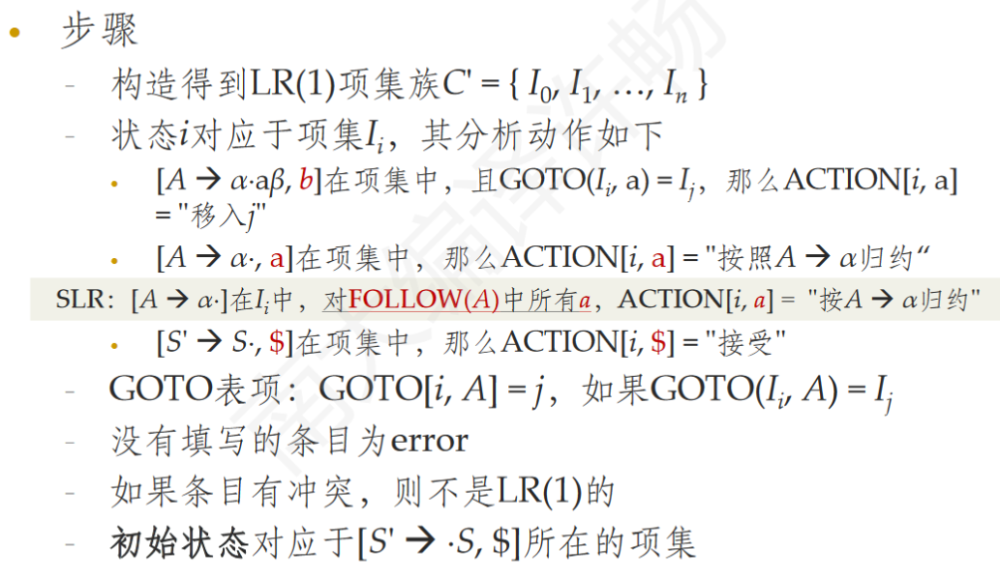- 注意和SLR（1）的区别！
-
但是LR(1)语法分析表的状态数量很大！
-
-
LALR语法分析表：
（状态数量和SLR(1)相同）
- 基本思想：寻找具有相同核心的LR(1)项集，并合并为一个项集
- 一个LR(1)项集的核心就是一个LR(0)项集
- GOTO(I,X)的核心只由I的核心决定，因此项集合并后，GOTO目标也可以合并
- 合并会引起冲突：
- 不会导致移入/归约冲突（证明思路：假设存在移入/归约冲突，则原本的LR(1)分析表中就已经存在冲突）
- 但可能导致归约/归约冲突
- 构造LALR语法分析表：
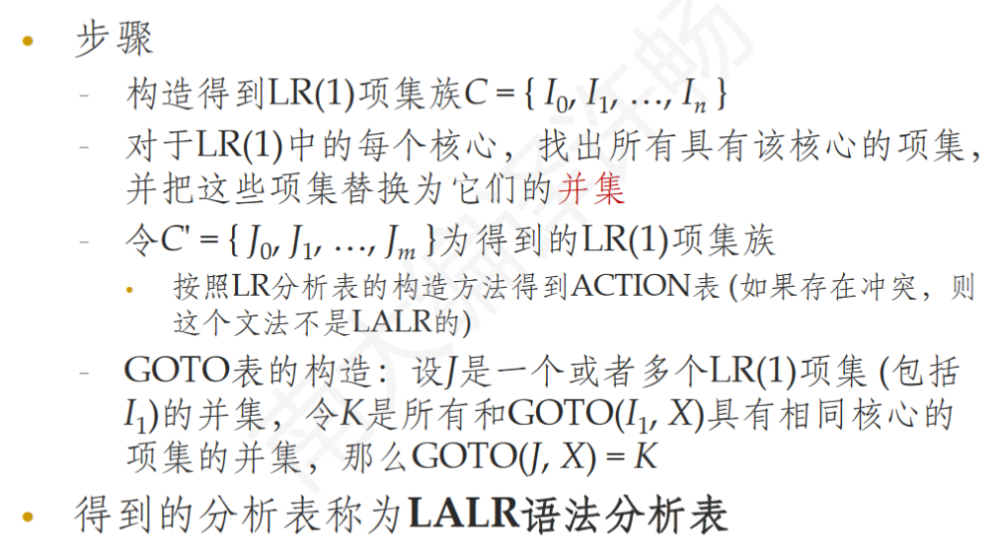
- $\textcolor{red}{如果有冲突，则得到的文法不是LALR的！}$
- 显然，对于语法正确的输入，LALR和LR分析器的动作序列是相同的！
- 对于错误输入，LALR只可能多执行一些归约操作，但是并不会多移入字符！
- 基本思想：寻找具有相同核心的LR(1)项集，并合并为一个项集
-
-
二义性文法：
-
二义性文法都不是LR的！但有些二义性文法是有用的，因此可以消除二义性规则
- LR分析器中可以实现消除二义性！
-
优先级/结合性：（消除二义性）
- 多用于表达式运算符，以及if-else
- 规定了优先级/结核性后，可以产生无二义性的文法分析表
-
五.错误恢复
-
语法错误的处理
- 需要识别并指出位置；
- 能从错误中恢复，继续检测后面的错误
-
预测分析（自顶向下：LL）中的错误恢复
- 进行错误恢复时可用的信息：栈里面的符号、待分析的符号
- 两类错误恢复方法：
- 恐慌模式：
- 遇到错误：试图忽略掉一些符号（输入、栈上），跳过该程序结构，继续进行后面的语法分析
- 同步词法单元是这个程序结构结束的标志
- 同步词法单元是什么？直觉上来讲：FOLLOW(A)！
- 文法符号A（非终结符）的同步集合启发式规则：（将以下符号加入A的同步集合中）
- FOLLOW(A)中所有符号
- 高层次非终结符号对应串的开始符号
- FIRST(A)中符号（如$A\to xyz$，输入为！xyz（多输一个字符））
- 若A为终结符：匹配错误时，可直接弹出该符号，并假装已经插入了该终结符（对应少敲一个字符）
- 恐慌模式的预测分析表：
- synch：表示：发生错误，但可能是后面正确高层次非终结符号的开始符号，则一直弹出栈中非终结符直到匹配
- 空白项：忽略掉该输入（可能是多输入了）
- 当终结符号不匹配时，直接弹出栈中终结符（可能漏了）
- 短语层次的恢复
- 在预测语法分析表的空白条目中，插入错误处理例程的函数指针
- 例程可以改变、插入或删除输入中的符号，并发出适当的错误消息
- 错误恢复能力很强，但是工作量大
- 在预测语法分析表的空白条目中，插入错误处理例程的函数指针
- 恐慌模式：
-
LR语法分析中的错误恢复
- 查询ACTION表时可能发现报错条目：
- 栈中符号串为$\alpha$，当前输入符号a，报错表示：不存在中介符号串x使得$\alpha ax$为一个最右句型
- 恐慌模式的错误恢复策略：（此即实验一用的方法）
- 栈顶向下扫描，找到状态s，s有一个对应于某个终结符A的GOTO目标（s上的状态全丢弃）
- 输入中丢弃符号，直到一个可跟在A后面的符号b，并将GOTO(s，A)压栈
- 继续分析
- 短语层次的恢复
- 检查LR分析表中的每个报错条目，根据语言的特性来确定程序员最可能犯了什么错误，然后构造适当的恢复程序
- 查询ACTION表时可能发现报错条目：
语义分析（语法制导的翻译）
-
通过了词法分析-（合法符号流）->语法分析-（符合语法，语法分析树，有时在构造分析树的同时同步SDD求值）->语义分析
-
文法与语义
- 使用上下文无关文法引导语义的分析：
- CFG非终结符 表示语言的某个构造
- 构造 由 更小的构造组成
- 构造的语义：可由小构造的语义综合而来；（x = a + b;）或从附近继承而来。（int a;）
- 使用上下文无关文法引导语义的分析：
-
语法制导的定义（SDD）
-
Syntax-Directed-Definition：CFG + 属性/规则 的结合
- 属性和文法符号关联；规则和产生式关联（规则用来计算文法符号的属性）
- 基于SDD，可以在一个程序的语法分析树上计算语义信息
-
属性
-
综合属性（Synthesized Attribute）
- 节点N的属性值由N的产生式关联的语义规则定义
- 由N自身和其子节点的属性值定义
- 自底向上，产生式从右往左 $N\to AB$
-
继承属性（Inherited Attribute）
- N的属性值由父节点所关联的语义规则来定义
- 依赖于N的父节点、N本身、N的兄弟节点上的属性值
- 如对于产生式：$X\to ANB$，。。。
-
几条约束：
- 不允许N的继承属性 通过N的子节点上的属性来定义！
- 允许N的综合属性依赖于N本身的继承属性
- 终结符号有综合属性（来自词法分析），但无继承属性
-
S属性的SDD：只包含综合属性的SDD称为 S属性的SDD
- S属性的SDD可以和LR语法分析器同时进行！
- 栈中的状态/文法符号 可以附加相应的属性值
- 归约时，按照语义规则 计算 规约得到的符号 的属性值
- S属性的SDD可以和LL语法分析器（自顶向下的语法分析过程）同时进行！
- 递归子程序法：$A\to XYZ$，子程序A()中，如果X()&&Y()&&Z() 返回true了，则已经计算完了XYZ的属性，因此这时计算A的属性即可，然后再返回true。
- 基于预测的LL(1)也差不多
- 语义规则一般不该有复杂的副作用
- 要求：副作用不影响其他属性
- 没有副作用的SDD称为属性文法
- S属性的SDD可以和LR语法分析器同时进行！
-
-
语法分析树上的SDD求值
- 注释语法分析树：包含了各节点的属性值的语法分析树
- 按照分析树中分支对应的文法产生式，应用相应的语义规则
- 若结点N的属性$a=f(N_1.b_1,N_2.b_2,…,N_m.b_m)$，则需要先算出后面m个属性，再算a；能确定计算顺序，则一定能算出注释语法分析树！
- 有依赖环的SDD不能计算！
-
SDD的求值顺序
- 依赖图：（以某节点的某个属性 为单位）
- 给定SDD，很难判定是否存在一棵分析树，其对应的依赖图包含环；
- 但给定SDD和分析树，容易判断是否存在环（强连通分量）
- S属性的SDD，L属性的SDD一定不存在环
- A.a指向B.a表示计算属性B.a需要依赖属性A.a
- 在分析树上计算SDD：后序遍历
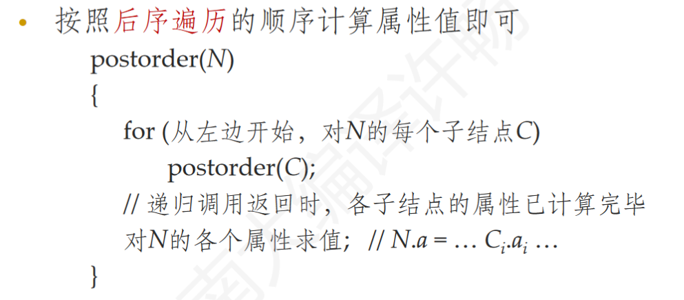
- 依赖图：（以某节点的某个属性 为单位）
-
L属性SDD
- S属性SDD存在局限：全都是综合属性，无法计算同时综合+继承的属性，如：int a[2][3]
- L属性SDD的每个属性：
- 是综合属性
- 是继承属性，且$A\to X_1X_2\cdots X_n$中计算$X_i.a$的规则只是用：
- A的继承属性，和
- $X_i$左边的文法符号$X_j$的任何属性（j<i）
- 则，依赖图中无环：综合属性下到上；继承属性上到下，或左到右
- 自顶向下语法分析过程中计算L属性SDD：
- 非终结符A：调用其过程前计算继承属性，过程返回后计算综合属性
- 对于$A\to X_1\cdots X_n$：调用$X_i$前计算其继承属性，调用之后计算其综合属性
-
具有受控副作用的语义规则
- 有副作用的一个例子：变量声明int x x = 1
- 语法分析时，如果无副作用，标识符表就必须作为属性传递！
- 有副作用：把标识符表当作全局变量，调用函数添加新id
- 受控副作用：
- 允许：可以按照依赖图拓扑顺序求值而不会对最终翻译结果产生影响的副作用（这种不会对属性求值产生影响）
- 对求值过程添加简单的约束
-
-
语法制导定义（SDD）的应用（两个应用：构造AST，和类型结构）
-
计算类型：如 int [2][3] a
-
语法分析树
- 具体语法树（CST）：保留所有词法元素，符合上下文无关文法
- 抽象语法树（AST）：可忽略一些非本质东西；某些树结构转为列表；不符合上下文无关文法；易于遍历 处理。特点：只保留必要词法元素；某些词法元素信息存入父节点的属性；移除没有是指信息的中间推导过程
-
构造抽象语法分析树
- 如何直接构造AST呢？通过SDD！
- 每个节点代表一个语法结构（对应运算符）
- 节点的子节点对应运算分量
- 表示方法：每个节点用一个对象表示；叶子节点只有词法值、其他（内部）节点存op和参数（子节点）
- 一个例子：
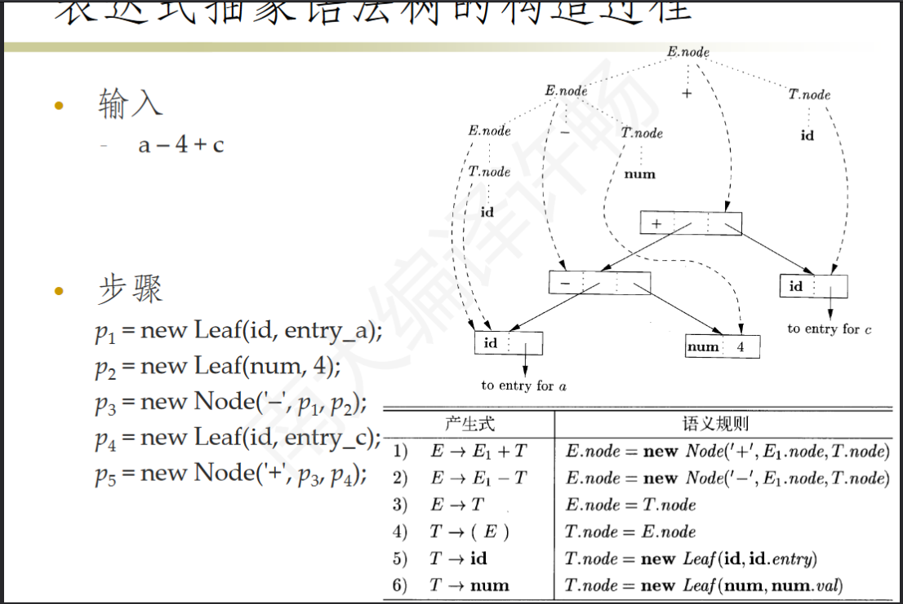
- 注意：所以按照这个过程，所有的node属性 都是综合属性！（S属性SDD）
-
语法制导的翻译方案（SDT）：在产生式体中嵌入语义动作（程序片段）的上下文无关文法
-
用SDT实现语法翻译（how？）：SDT是SDD的一种补充！
-
SDT的实现方法：
-
遍历法：建立语法分析树（CST!）——>将语义动作看作虚拟节点（绑定语义动作）——>深度优先、从左到右遍历分析树，访问虚拟节点时执行语义动作
-
如何插入虚拟节点？：对于综合属性的语义动作，将该虚拟节点作为子节点插到产生式头节点的右边！（原因显然：深度优先，从左到右）
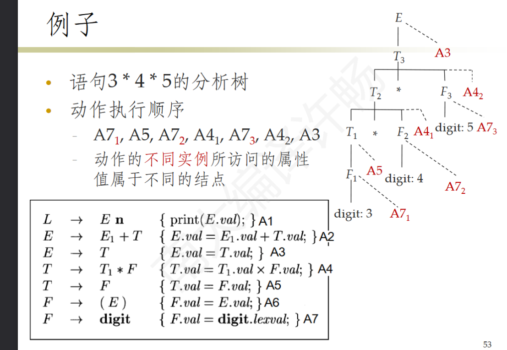 -
更难的方法：在语法分析过程中实现SDT
-
通用判断是否可以在语法分析过程中实现SDT：
- **语义动作能否在想要的时机执行？**每个语义动作 替换为一个非终结符M（$M\to\epsilon$），添加到原产生式右边？如此，得到新文法G’（G+SDT$\to$G’）；如果新文法，可以被某种语法分析技术进行分析（即没有引入冲突，是LL/LR的。。。），则该SDT可以在分析过程中实现（可通过计算机自动判断）
- **语义动作能否执行？**得结合属性依赖关系，判断每个虚拟节点能否执行（需人来判断）
-
两类重要SDD一定可以：
- 若SDT基于LR文法，且SDD是S属性的，则必然可以在自底向上的语法分析过程中实现；统里，若SDT基于LL文法，SDD是L属性的，也可以自顶向下。。
-
后缀翻译方案：基于LR，SDD是S属性=>必可以构造后缀翻译方案
- 后缀SDT：所有语义动作（对应虚拟节点）都在产生式最右端的SDT
-
L属性的SDT
- 产生式内部带有语义动作：如$B\to X{a}\gamma$
- 动作左边的所有符号及动作处理完后，立即执行此动作
- 自底向上：X出现在栈顶时执行a
- 自顶向下：试图展开（非终结符）$\gamma$或输入中检测到（终结符）$\gamma$时执行a
- $A\to X_1 X_2\cdots X_n$，A的综合属性SA，插到$X_n$后，X2的继承属性IX2，插到X2前（X1后）
- 产生式内部带有语义动作：如$B\to X{a}\gamma$
-
-
-
while语句的SDD和SDT：
- 为while语句生成中间代码（把高层次的控制流/跳转等等结构，转换为低层次的代码；关键在于说明控制流中的标号（L1,L2。。。））
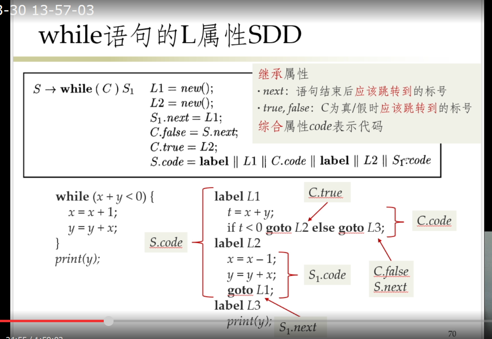
- next（执行完该块代码，应该跳转到的label）；false，true：条件为false/true时应跳转到label（上全是继承属性）；code：综合属性
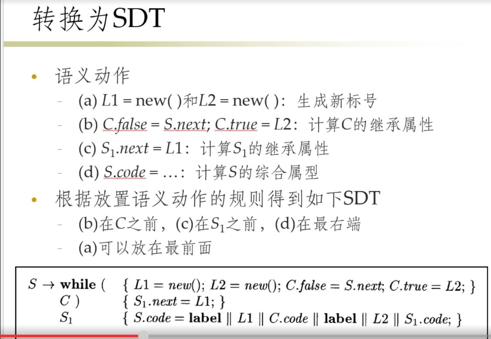
- 下一步关键在于，将label与具体位置对应
- 为while语句生成中间代码（把高层次的控制流/跳转等等结构，转换为低层次的代码；关键在于说明控制流中的标号（L1,L2。。。））
-
L属性SDD的实现
- 递归下降语法分析器：每个非终结符S对应一个函数S（），继承属性作为参数传入，返回综合属性！（S.code）
- 用局部变量存其他属性（防副作用）
- 但是这样反反复复传递code属性，非常大且低效
- 解决方案（上面一点的）：边扫描边生成属性：增量式添加到最终属性值中
- 条件：1.存在一个主属性，且是综合属性；2.产生式中，主属性是各主属性+一些其他 连接而成；3.非终结符号属性连接顺序 = 产生式中顺序
-
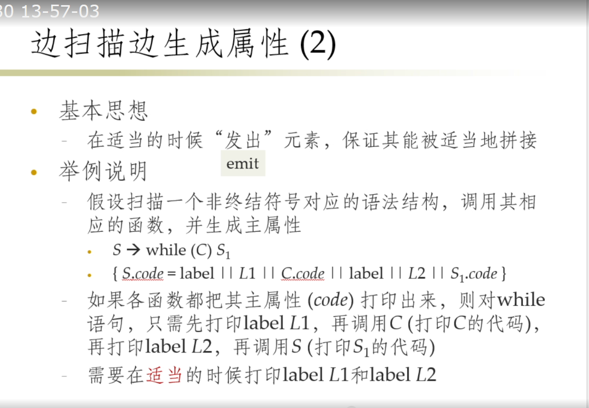
-
-
Ch6. 中间代码生成
前端：源语言相关；后端：目标机器相关 ===> 中间代码：连接前端后端，与二者均无关！可进行优化
程序语句分为两大类：表达式语句（类型系统），控制流语句
-
前端：（词法分析）语法分析、静态检查程序（类型检查、语法检查（如break语句在循环块内））、中间代码生成
- 中间表示形式：高层、低层
- 抽象语法树（高层表示形式）
- 三地址代码（高层或底层）：一条指令右侧最多一个运算符：a = b * c形式
- 中间表示形式：高层、低层
-
语法树变体
-
表达式的有向无环图DAG：公共子表达式N（可以是叶子节点）可以有多个父节点
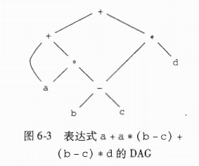 -
构造表达式的DAG 的方法：
-
同样用SDD构造AST的方法，然后每次要创建一个新Leaf/Node时，先判断是否已存在同样的Leaf/Node，如果存在，Leaf/Node方法直接返回对应的节点
-
维护一个记录数组：
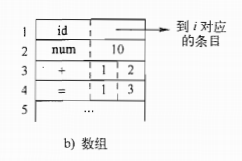 -
某一节点在记录数组中的下标（/或该节点的引用），称为该节点所表示的表达式的值编码
-
则每个内部节点的范型为：三元组 <op, l, r> 标号，左子节点值编码，右值编码（单目运算符，r=0）
-
-
-
三地址代码：主要两个概念：地址，指令
-
是DAG/AST的线性表示形式，每条指令右侧最多一个运算符，抽象层次接近机器码，有明晰的控制流结构
-
允许的运算分量（地址）：变量（源程序中的名字，实际替换为 指向符号表条目的指针）；常量（源程序中出现或生成的常量）；编译器生成的临时变量（可加入符号表；或者为Temp类对象）
-
指令集合：
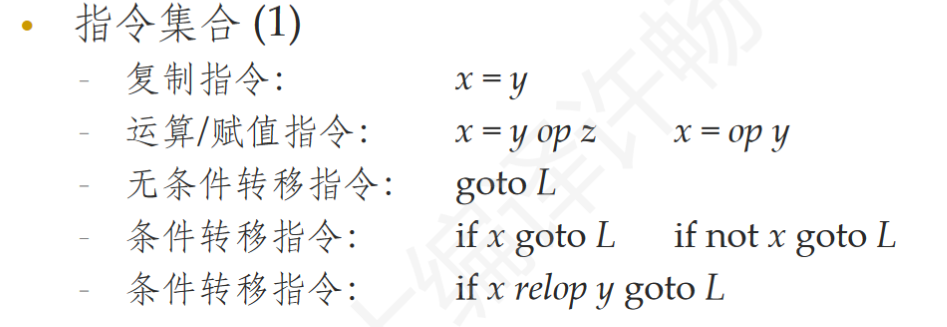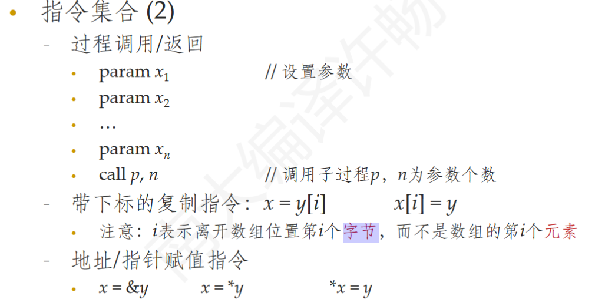 -
指令在数据结构中的表示方式
- 四元式：op，arg1，arg2，result（单目无arg2；param指令无arg2和result；跳转指令 目标标号为result）
- 还有 三元式 和 间接三元式
-
-
静态单赋值（Static Single Assignment SSA）：特殊的三地址码，所有变量在代码中只被赋值一次
- 构造思路：每个变量维护一个计数器；遍历函数体；每次变量赋值，赋新名字（下标+1），并在之后的右值使用处，用新名替换
- tips：通常只对函数内局部变量计算SSA，全局变量很难算！
- 引入$\phi$函数（应对分支结构）：用$x_j = \phi(x_1,x_2,…)$来合并不同控制流下的不同赋值
- 如if（flag） x1 = 1； else x2 = 2； x3 = $\phi$（x1，x2）
- $\phi$中可以出现后面代码中才出现的变量名，如$x_2 = \phi(x_1, x_3)$，对应循环结构！
- SSA的作用：
- 全是const变量（但如果存在循环结构，似乎不是const了！），简化数据流分析和某些优化
- 定义-使用链 清晰易计算
- 构造思路：每个变量维护一个计数器；遍历函数体；每次变量赋值，赋新名字（下标+1），并在之后的右值使用处，用新名替换
-
类型和声明：
-
作用：类型检查，检查运算分量类型 和 运算符预期类型是否匹配；确定内存空间、计算数组元素地址；类型转换；选择正确运算符（如a+b：可能对应不同的类型运算）
-
类型
- 基本类型：原子类型（机器可以支持的类型，通常有对应的机器指令）
- 复合类型：由基本类型组合而成的类型，递归定义的，如：数组、结构体、函数？
- 类型表达式：来表示类型的 表达式
- 基本类型：就是该类型的名字
- 复合类型：通过类型构造算子 作用于类型表达式得到
-
类型表达式：
- 类型构造算子array（表示同类型的聚合）：如array（2，array（3，int））
- 记录类型 构造算子record（不同类型数据的聚合），多组字段：字段名 x 类型
- 若s，t是类型表达式，笛卡尔积s×t也是
- 结构体类型中，用来组合：字段名和类型；多组字段
- 如struct { int a[10]; float f; } st：record((a x array(10, int)) x (f x real))
- 函数类型：类型构造算子$\to$：
- 如int foo(float x, long[5] y) {…}：类型表达式(float x array(5, long)) $\to$ int
- 于结构体类型不同，函数类型不需要记录（形参）名字！
-
类型等价性
例子：class X{int x;} x; class Y{int y;} y;
- 名等价：直接比较类型名字，则x和y类型不等价（命令式语言一般都是名等价）
- 结构等价：（基本类型还是名等价），而复合类型，会递归比较构造算子及参数分量（包括字段名），则x和y类型等价
-
-
用SDT进行符号表构造、计算类型及宽度、局部变量的存储布局等
- 采用SDT，在产生式（包括类型表达式文法的？）中插入语义动作
- 计算类型及宽度，基础类型直接知道，构造类型则要计算（数组 乘法；结构 加法；对于变量 符号表中直接有一个width属性）
- 局部变量的存储布局：维护一个offset变量，每进入一个新作用域，前offset压栈，新offset置零；
- offset指示该变量存储的地址（偏移量）
- 符号表栈：env；top始终指向当前作用域对应的符号栈（不在env中）
-
表达式代码的SDD（生成三地址码）：
-
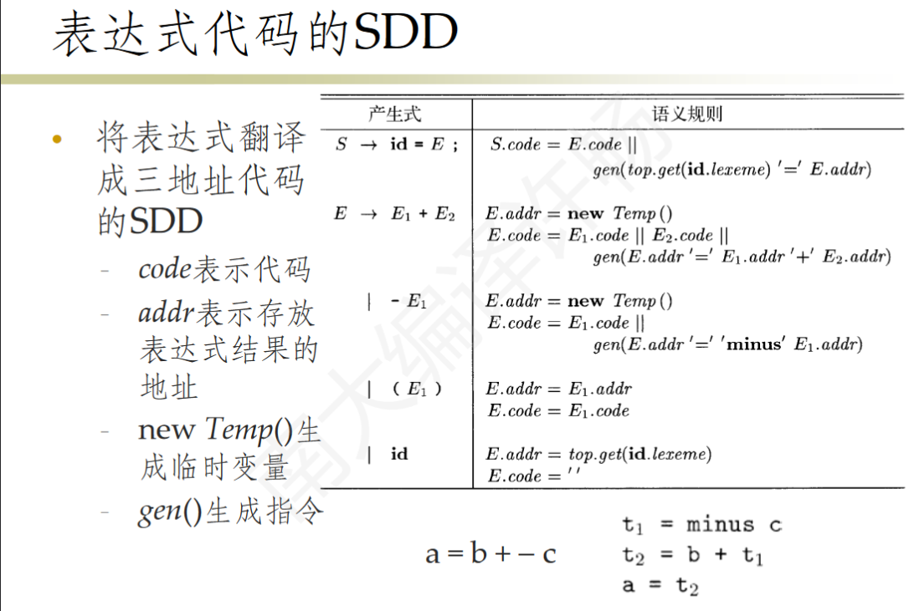
-
|| 表示代码拼接；addr属性 就是三地址码中的地址！存放了表达式结果
-
-
类型系统：
-
给每一个组成部分赋予一个类型表达式，有一组类型表达式规则（想想lab2），用来发现错误、提高代码效率（动态检查类型错误减少）、确定变量大小
-
类型特征：
- 强类型：不允许无关类型间操作；（允许的操作少）
- 弱：通过隐式类型转换（或其他可能的“口子”，如C/C++的指针操作），允许无关类型间操作
- 静态类型：（绝大部分）类型错误编译期检查
- 动态：（绝大部分）运行时检查
- Gradual Typing：混合
-
类型规则（Type Inference Rule）：
-
分式记法表大推到规则：前置条件/后置条件
-
类型判决式：e:T 表达式e的类型为T，如e1:integer e2:integer/e1+e2:integer
-
无条件成立规则：/0:integer， /true：boolean。。。
-
引入上下文（确定不同作用域标识符的类型）
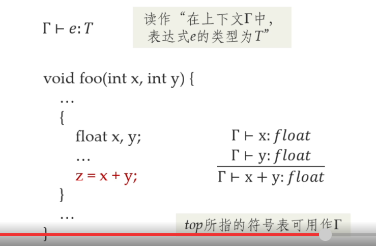 -
函数重载：函数符号表是一个（类型映射的）集合，然后根据传入参数类型，枚举匹配
-
-
类型转换：
-
（二元运算对应的）SDT:
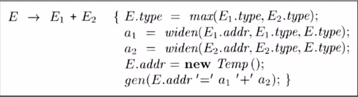 -
max函数求两个参数在 拓宽层次结构（short->int->float…）中的最小公共祖先；widen函数返回类型为E2.type的临时变量，值为E1
-
-
-
控制流语句的翻译
-
主要属性有：next，true，false，都是代表一个标签，以及code属性；true，false是只有条件表达式才有的，next是控制流语句S才有的属性；next，true，false都是继承属性；code是综合属性
-
关键在于，控制流语句，要为子语句块生成好label（继承属性），并且在code处完成好label的关联插入
-
控制流语句中不进行条件判断，只是进行label和语句的关联（以及while语句中的goto begin）；布尔表达式中需要处理条件判断和跳转
-
布尔表达式：比较、取非、true、false等等，直接判断/作用即可
-
或，非：短路求值，如B1 && B2，B1不成立时，不需要执行B2代码；要通过跳转指令实现！
-
产生式右边没有B的，则需要负责生成if … goto label的代码；有B的，需要处理的是label和关联
-
特例！：也许会出现id = B这样的语句（布尔表达式出现在赋值语句中），此时需要根据B的语法树节点所在位置，生成不同代码：在控制流语句中，生成跳转代码（同上）；赋值语句中，生成计算右值的代码（可以还是跳转语句，具体代码部分改为赋值语句，这样还保留了短路求值特性！）
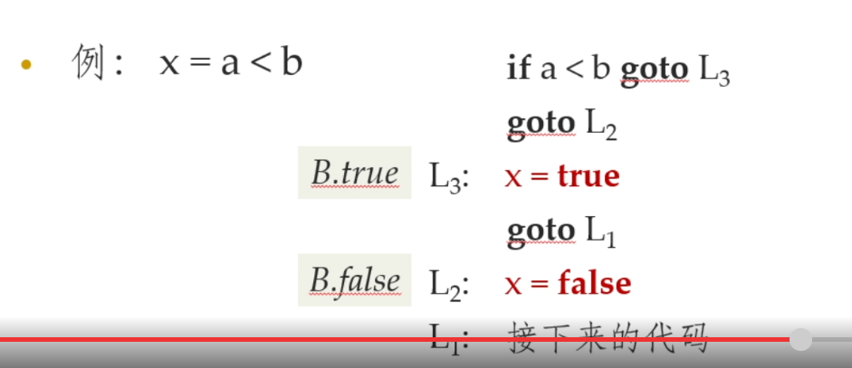
-
-
-
指令的标号与索引
-
标号（label）：翻译过程中用标号，方便，可提前生成，但不能直接定位，需要索引；
-
索引：指令的存储位置（作为数组元素的索引），可直接定位，不可提前生成
-
标号转索引：两遍遍历一定可以（第一遍获得标号，第二遍转为索引）；可否一遍获得索引？
-
回填！
- 关键问题：某些跳转指令该跳转到哪里？
- 指令坯：是综合属性，形如 if … goto __ (else goto __)，传给父节点
- 对应综合属性xxxlist（truelist，false，next），就是所有在B为true/false时需要跳转的指令列表；以及跳转到S的下一条指令的指令
- 同一列表中，跳转指令目标都相同
- 对于是跳转目标的代码块，记下它的索引，也传给父节点
- 产生式中引入M非终结符（展开为$\epsilon$），M.instr记录紧接着的跳转目标指令的索引
- $\textcolor{red}{每个M就对应非回填式SDD里的label}$
- 如$S\to\textbf{if};(B);M_1;S_1;N;\textbf{else};M_2;S_2$
- 其中的N因为在处理if语句的时候，会生成一条goto语句，也需要回填！
- 以及N（展开为$\epsilon$），在适当的位置生成跳转指令坯
- 还引入了L非终结符，表示语句列表：$L\to LS | S$ （S为一个语句）
- 用来对（语句列表）L的nextlist进行回填
- 产生式中引入M非终结符（展开为$\epsilon$），M.instr记录紧接着的跳转目标指令的索引
- 父节点集齐了所有指令坯和索引，则可以完成回填
- 辅助函数：
- backpatch（p，i）：将i作为跳转目标插入指令坯p的所有指令中
- merge（p1，p2）：将p1和p2指向的索引列表合并并返回
- makelist（i）：创建一个包含跳转指令（其索引为i）的列表；要通过索引i来找到这条指令并回填哦
- 全局变量nextinstr就表示当前已生成完的代码下一条的索引，应该是由gen函数来维护的
-
break 和 continue：和正常的xxxlist不能并论哦！
- continue可以在循环产生式中，给S传入循环头部index；当S中出现continue时，直接填入即可
- break则需要给S引入额外的属性！直到有循环体产生式的时候再将其与nextlist融合
-
Ch7. 运行时（刻）环境
要：为数据分配安排存储位置；确定访问变量时使用的机制（局部/全局）；过程间的连接、参数传递（函数调用）
-
存储分配的典型方式：

- 代码区：一直存在，不可变；空间固定，静态确定
- 静态区：全局常量/变量；一直存在，位置固定；空间固定，静态确定
- 堆区：跨函数存在；由低到高生长
- 栈区：局部变量，函数退出消失；由高到低生长
静态和动态存储分配：（动态：必须程序运行时才能决定存储分配）
- 动态存储一般有两种存储分配：栈式存储；堆存储
-
栈式分配：往往用于处理有用户自定义过程/函数/方法 的程序语言
过程调用在时间上必须是嵌套的！：如p调用q，则q结束后返回p；或p，q同时结束；或q出现异常，返回p，p尝试恢复
-
活动树：or调用树（Call Tree）
- 一棵树表示程序运行中所有过程的活动，每个节点对应一个活动；其子节点表示在p过程调用中，被p调用的各个过程的活动；根节点对应main过程的活动
- 子节点一定在其右兄弟节点开始前结束
- 性质：调用（返回）序列 对应树的前序（后序）遍历；当前活动节点N，则所有未结束活动就是N及其祖先节点
-
活动记录
-
过程调用和返回 均由控制栈（一个运行时刻栈）管理，其中存储每个活跃的活动的活动记录
-
活跃（未结束）的活动 对应一条活动记录/帧
-
栈底向栈顶生长
-
一种可能的活动记录组成（下栈顶，上栈底）：

-
临时值：寄存器存不下的中间结果；机器状态：包括返回地址、被调用者/调用者保存的寄存器值；访问链：后面再说；控制链：指向调用者的活动记录；
-
-
调用/返回代码序列：
-
调用~：实现过程调用的代码段；需要在栈中为一个活动记录分配空间，并填入信息
-
返回~：需要恢复机器状态；（并回收控制栈中的活动记录？）
-
调用代码序列，会分到 调用者 和 被调用者 中分别执行；
- 但是n次调用同一个函数，被调用者代码段只会生成一次，而调用者代码段 会生成n次！
- 故尽量都放在被调用者中！
-
调用/返回~ 的要求：
- 数据：参数传给被调用者，返回值传给调用者；
- 控制：转到被调用者的开始代码，返回调用者的调用位置下条指令
-
活动记录的布局原则：调用代码序列 与 活动记录的布局相关！
-
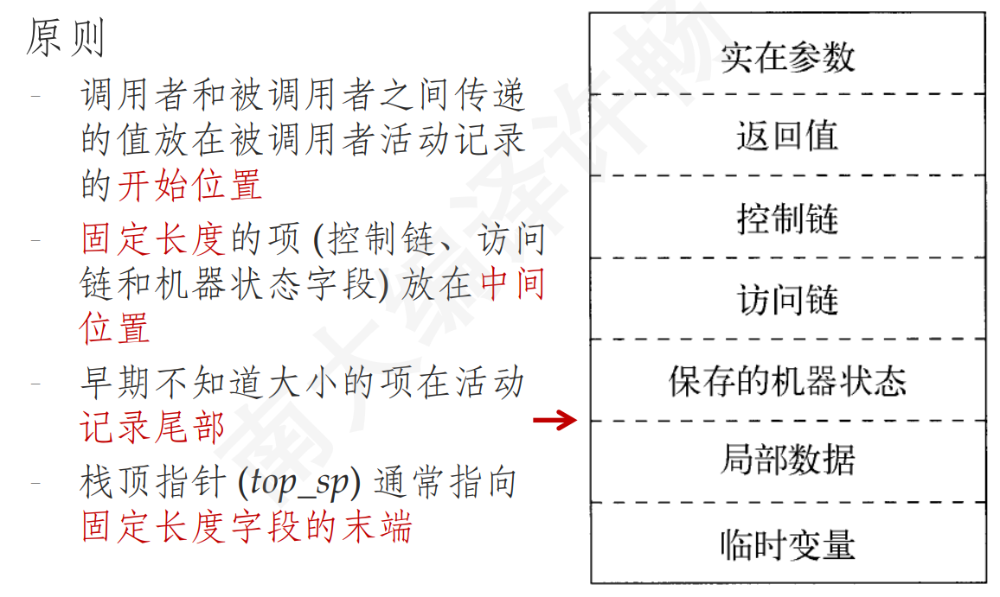
-
原则1是为了：调用者可以只需要计算出实在参数并放在自己活动记录的顶部，不需要创建被调用者的整个活动记录！且参数数量可变了~
-
支持不固定数量的参数 进行函数调用：需要把描述参数的信息，放在状态字段（固定长度段）旁，例如printf的第一个参数？
-
-
-
栈中变长数据：
- 变长的局部数据，如变长数组，也可以分配在栈上：在当前活动p的活动记录后，加一段（不属于活动记录）数组部分，专门用来存放p的局部数组变量，p的局部数据部分有这些数组的首地址
-
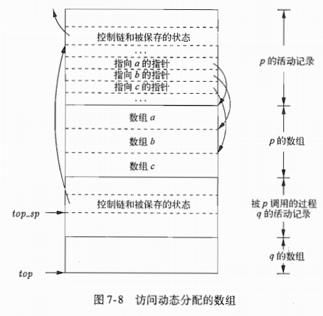
- top指向数组部分结尾，表示下个函数调用的活动的活动记录开始位置；q结束时，top_sp恢复可直接根据控制链，top恢复则需要top_sp减去定长部分+返回值+实参部分长度，其中实参部分由调用者p确定！
-
-
非局部数据的访问：有无嵌套（函数定义）
-
无嵌套：如上所述；可以容易的将函数作为参数进行传递~
-
有嵌套：需要用访问链；不能直接将嵌套的函数 进行传递！
- 嵌套深度：可根据源程序静态确定哦！
- 访问链：若过程p在声明时（直接）嵌套在过程q中，则p活动记录的访问链指向上层最近的q的活动记录；嵌套深度沿 访问链路 逐一递减！
- 维护：过程q调用过程p时：
- p深度大于q，则q直接定义在p中，则p的访问链指向q
- q递归调用，则深度p=q，p访问链与q的指向相同！
- p深度 小于等于 q深度，则必然存在过程r，p直接在r中定义，且q嵌套在r中（r也许就是全局！）；则p访问链指向r（p.outer）
- $\star$ 传递过程指针参数（函数指针？）时，除了要传递值（开始地址），还要传递正确的访问链！
- 限制：1.若p嵌套在q中，则过程p活跃时，q一定也活跃（未结束）！；2.不能越过p直接调用q！（因此python的非局部数据访问 不是靠访问链实现！）
- 维护：过程q调用过程p时：
- 若深度为$n_p$的过程p访问变量x，x的深度已知为$n_q$（在过程q中声明），则沿访问链向前进$n_p-n_q$次即可找到q的活动记录，x的偏移量也已知
-
显示表：（对标访问链）访问链访问数据开销与深度差相关，显示表可以常数时间
- 数组d，为每个嵌套深度保留一个指针，d[i]指向最近的，嵌套深度为i的活动记录
- 维护：调用p时，深度为$n_p$，则p活动记录中需保存d$[n_p]$值；当p返回时，再恢复d
-
-
堆管理：需处理的问题：分配/回收子空间；类别：需手动回收/会自动垃圾回收
-
可达性：
- 根集：不需要指针解引用就可以直接访问到的对象的集合；根集全可达
- 若一个指针可达，则所有通过该指针可访问到的对象都可达
- 若A由可达变不可达，则不会再变可达
-
基于引用计数（垃圾自动回收：追踪不可达瞬间）
- 垃圾互引用（无来自根集的指针），则无法识别！
-
基于跟踪的 垃圾回收：只关注可达对象（最基本：标记-清扫式）
- 每过一段时间，全面扫描（从根基开始，遍历引用图，标记所有可达对象）
- 清扫：遍历堆区，释放所有垃圾对象
- 优化：（标记-复制/整理 式垃圾回收）
- 只处理可达对象：移动堆区中所有可达对象到某一区域（预留的另一半 / 一端）
- 注意需要更新所有的引用！
- 标记-整理式 回收步骤还是需要遍历一遍整个堆区！当垃圾较少时效率较高
- 标记-复制式 回收步骤则当可达对象较少时（垃圾多）效率高
- 剩下的空闲区域为一大整块：避免碎片化
- 只处理可达对象：移动堆区中所有可达对象到某一区域（预留的另一半 / 一端）
-
分代式垃圾回收：
- 生存周期特征：一般刚创建的对象 更可能不再使用；存在时间越长的对象，被回收的几率越小
- 根据生存周期，对对象分代管理：
- 年轻代：刚创建的对象什么的；当年轻代空间不足时，采用标记-复制式垃圾回收（垃圾多）
- 老年代：”熬过“垃圾回收的对象进入老年代，老年代空间不足时，采用标记-整理式垃圾回收（垃圾少）
-
Ch8. 代码生成
- 代码生成器
-
根据中间表示（IR）生成代码
-
生成器前可能有个优化组件
-
任务：
- 选择适当的指令实现IR语句
- 寄存器分配和指派
-
输入IR的选择：
- 四元式、三元式，字节代码，抽象语法树，DAG图，。。。
-
输出：（为我们的实验）
- RISC, CISC
- 可重定向代码，汇编语言
-
目标机模型：简单的三地址机器模型，指令包括：
- 加载：LD dst，addr（addr必须是地址，会对addr解引用，其中内容加载到寄存器dst）
- 保存：ST x，r（寄存器r保存到内存x，x必须是地址）
- 计算：OP dst，src1，src2（全是寄存器）
- 无条件跳转：BR L（跳到标号L，L是一个地址！）
- 条件跳转：Bcond r，L（判断寄存器r中值 是否符合条件cond，cond由命令本身决定）
-
寻址模式：我们的约定
- 变量x：变量x的内存位置（是个地址）
- a（r）：a的左值+寄存器r的值（一般a为一个数组之类的在内存中的位置）（值为地址）
- constant（r）：constant + 寄存器r
- *r：寄存器值指向的内存中的值，可值可地址
- *constant（r）
- 常量#constant
-
主要问题：
- 如何为过程调用和返回生成代码？
- 静态分配（活动记录）
- 栈式分配（活动记录）
- IR中的名字（过程名和变量名）转换为目标代码中的地址？
- 不同区域名字采用不同寻址方式
- 如何为过程调用和返回生成代码？
-
活动记录的静态分配
每个过程静态地分配一个数据区域，开始位置为staticArea表示：则（staticArea）可以在编译时确定！
call callee实现：
- ST callee.staticArea, #here + 20 （#here+20表示下一条指令位置，20为ST + BR指令的长度，即返回地址）
- BR callee.codeArea
callee中的return：
- BR *callee.staticArea （为什么要加*? 因为staticArea是一个内存位置！）
致命问题：不可重录（嵌套调用（递归），因为每次递归调用，信息都存放在同一个数据区域（staticArea同）！）
活动记录的栈式分配
有一个专门的寄存器SP指向活动记录的栈顶
第一个过程（main）负责初始化栈区
过程调用指令序列
- ADD SP, SP, #caller.recordSize （调用者增大栈指针）
- ST 0(SP), #here + 16 (实际还有保存很多东西)
- BR callee.codeArea
返回指令序列
-
BR *0(SP)
-
SUB SP, SP, #caller.recordSize (调用者负责 再减小栈指针)
-
基本块和流图：基本块内都是**！中间代码！**
-
中间代码的流图表示：
- 中间代码划分为基本块
- 基本块内部 顺序执行（只有最后一条语句会跳转）
- 基本块之间 只有跳转
- 控制流只能从基本块第一条语句进入
- 流图：节点是基本块，边代表控制流的跳转
- 中间代码划分为基本块
-
流图作为优化的基础：
- 比如可以知道：一段代码/一个值是否会被使用到
-
划分基本块的算法：
- 输入：三地址指令序列
- 输出：基本块列表
- 方法：
- 只需确定每个块的开始（首指令leader）
- 第一条三地址指令；
- 任意一个（条件/无条件）跳转指令的目标指令
- 紧跟在（条件/无条件）跳转指令后的指令
- 确定基本块：从当前首指令，到下一条首指令之前，为一个基本块~
- 只需确定每个块的开始（首指令leader）
-
后续使用信息的分析：（局部）
-
变量值的使用：用来确定 某变量的值是否需要保存（占用在寄存器内，如果不活跃，则可以直接覆盖！）
- 若三地址语句i：向变量x赋值；存在另一条语句j：有一个运算分量为x；且从i到j存在一条路径p，路径p中没有再对x赋值，则j使用了i处对x的赋值
- 则说，变量x在语句i后的程序点上活跃
- 不活跃：则指变量的值不会再被使用（并非变量不被使用，如紧跟着一个赋值，覆盖掉）
-
分析过程：
- 输入：基本块B，开始时B中所有非临时变量均是 活跃的（用户自定义变量，缺省认为 后面还会使用）；临时变量则缺省认为不活跃（后面的基本块不会再用）
- 输出：各语句i上变量的活跃性、后续实用信息
- 方法：
- 反向扫描：从B的最后语句开始，先看到变量值的使用，才能决定是否活跃
- 对每条语句i：x = y + z
- 令语句i和x、y、z当前活跃信息/实用信息关联（即语句i记录下x、y、z信息）
- 然后设置x（写的变量）为 不活跃 和 无后续使用（对于a[i]=0语句，认为a和i都是被使用的，因此都活跃？默认a是指针变量？）
- 接着设置y和z（读的变量）为 活跃，并指明下一次使用为语句i
- 注意要先设 写，再设 读！（x = x + 1）
- 最后，得到整个基本块的各变量的活跃和后续使用信息：由最靠前语句的活跃信息决定
-
-
流图的构造：
- 节点是基本块，节点A到B存在一条有向边 iff 基本块C的第一条指令可能紧跟在B最后一条后执行
- 则称A是B的先驱，B是A的后继
- 入口和出口节点：
- 不和任何中间指令对应；入口到第一条指令有一条边；任何可能最后执行的基本块到出口有一条边
- 节点是基本块，节点A到B存在一条有向边 iff 基本块C的第一条指令可能紧跟在B最后一条后执行
-
循环：（大部分运行时间都在循环上，因此是优化的重要目标！）
- 定义：循环L是节点的集合；有一个入口节点（唯一），到达循环任何节点的必经路径；循环内节点都有到达入口节点的路径（且都在L中）
-
对基本块的优化：（局部优化）
-
每条表达式指令都可以用DAG形式表示，将基本块中的所有指令的DAG合并为一整个DAG？（第二条指令的DAG画在第一条的上面）
-
每个变量都有一个对应的DAG节点表示其初始值
-
每个语句s有一个相关节点N，代表其计算得到的值
- N的子节点，对应于（得到当前运算分量当前值的）其他语句
- N的标号为：s中的运算符，并且有一组变量被关联到N，表示s是最晚对这些变量进行定值的语句
-
DAG图的构造：
-
构造算法
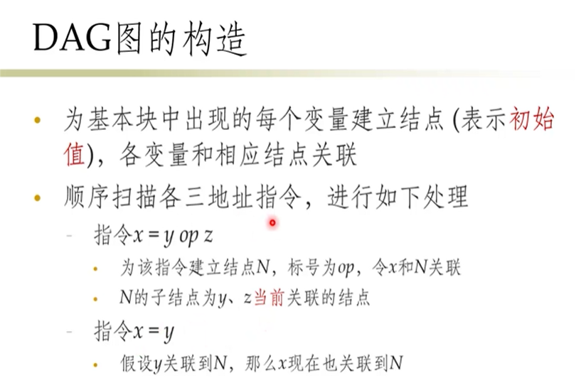 -
例子：

-
-
-
DAG作用
描述了基本块内：运行时各变量的值之间的关系；可对代码进行转化：
-
局部公共子表达式：每次建立某节点M前，先检查是否存在节点N，与M具有同操作符和子节点（注意子节点相同，需要子节点对应变量的引用相同！如：a = b + c; b = 1; d = b + c; a和d不同！！）
-
消除死代码：消除DAG图上没有附加活跃变量的根节点（需要根据全局的基本块活跃分析？）
-
基于代数恒等式的优化：一些常量替换，表达式的简化，乘变加 啥的
-
数组引用：
- 对数组赋值a[i] = y（[]=节点）有3个子节点
- 当存在多个指针、多个下标的时候，如x=b[i]; b[j] = y; 则节点x=b[i]不可再被复用！！！因为可能被覆盖：此时，该节点被杀死，指该节点不能被复用
-
指针赋值/过程调用：
- 如x=*p，则x可能使用了任意变量，则无法消除死代码！
- *p=y，则可能给任意变量赋值，因此杀死了所有其他节点！
- 咋办？：（局部/全局）指针分析
- 过程调用也同理。。。：可能使用以及修改了可访问范围内的一切变量
-
从DAG到基本块：重构
-
重构方法：
- 每个节点：一个三地址语句；从下往上
- 尽量使用活跃变量来赋值！（当等价时）
- 若节点有多个关联的变量，则需要用复制语句进行赋值
-
重组规则：
- 只有读读顺序可以更改，读写、写写顺序不能改（数据库的那个顺序？）
- 过程调用、指针间接赋值，不能变顺序！
-
-
代码生成器：
-
根据三地址代码序列 生成机器指令：
- 关键问题：1.选择哪条机器指令？2.选择哪个寄存器？
- 目标：减少ST和LD指令
- 原则：要装载内存中值，则尽量让它呆久些（多用会）
- 基本思想：对于一条三地址指令
- 仅当运算分量不在寄存器时，才从内存载入；
- 尽量覆盖不被使用的寄存器值
- 数据结构：
- 寄存器描述符：跟踪各寄存器存放了哪些变量
- 地址描述符：各个变量的当前值存放在哪些位置上（寄存器和内存位置）
-
代码生成算法：逐个处理每条三地址代码
-
1.getReg（I）：选择最佳寄存器；
- 对于三地址代码x = y op z：
- 首先为运算分量y和z分配寄存器：
- 若y已经在寄存器Ry中，则直接返回Ry
- 若y不在寄存器中，且有空闲寄存器：则返回一个空闲寄存器Ry
- 无空闲：
- 寄存器R：v；
- v地址表明，还有其他位置有v（包括内存？），ok
- 若v是x（结果），且x不是z（运算分量），ok（则也为x分配寄存器R！）（情况3的特例）
- 若v之后不活跃（不会再被使用），ok
- 否则：对于R中每个保存的变量，都得生成st v,R （溢出操作）
- 寄存器R：v；
- 为结果x分配寄存器：
- 先只有x的R；然后若y/z之后不再使用，则仅保存了y/z的寄存器也可；
- 然后空闲寄存器；
- 然后无空闲的1，3
- 无空闲的4
- 特例：处理x = y时：
- 先选择Ry（同前y）
- 然后Rx = Ry
- 首先为运算分量y和z分配寄存器：
- 对于三地址代码x = y op z：
-
2.生成代码：

-
3.更新寄存器、地址描述符：
-
LD R,x：（寄存器；地址；其他变脸的地址）
- R寄存器只包含x；
- x地址：R作为新位置加入到x的位置集合中
- 从非x变量的地址描述符中删除R
-
ST x，R：
- x地址：加入内存地址x
-
ADD Rx,R2,R3：
- Rx：只x
- x地址：只包含Rx（无内存！）
- 如果删去了一些R，则还要顺带更新R！
- 非x的地址描述符：除去Rx
-
特殊：对于x = y（三地址代码）：
- 若生成LD Ry，y，则先按前（1）的更新
- 然后Ry：加入x
- x地址：只包含Ry（无内存）
- 若删去了一些R，还要顺带更新R！
-
-
-
一些优化：
- 窥孔优化：使用一个滑动窗口，只检查窗口内的指令，看是否可以优化
- 多余的LD/ST指令：LD R0，a； （紧跟后，且同属一个基本块）ST a，R0
- 级联跳转代码：条件跳转语句，看可否条件翻转来消除一条goto语句
- 对于编译时可知的条件，可以将条件跳转语句 改为无条件跳转！
- 控制流优化：
- 连续多次跳转，可以直接跳到最后~
- 代数化简：代数恒等式；使用机器特有指令（INC, DEC）
- 窥孔优化：使用一个滑动窗口，只检查窗口内的指令，看是否可以优化
-
寄存器分配和指派 策略：
- 简单的分组策略：数组组、算术计算组、。。。
- 利用率低！开销大！
- 全局寄存器分配：
- 循环中频繁使用的值 存放在固定多个寄存器中
- 可通过使用计数来估算
- 简单的分组策略：数组组、算术计算组、。。。
-
树重写实现 指令选择（一般指多种寻址方式）
因为同一三地址码可使用多种机器指令，or多个三地址码可使用同一机器指令
-
指令选择：为实现中间表示形式，选择适当的机器指令
- 用树 表示 中间表示，按照特定规则 不断覆盖这棵树 并生成机器指令
- 这里提到的中间表示：需要考虑到变量地址层面了（如局部变量a，需要栈顶SP指针+偏移量Ca来取）
- （那会不会和前面提到的寄存器分配矛盾了啊？因为有些时候不需要LD或ST啊？如已经取了局部变量a在寄存器Ra，且a活跃；这里的中间表示 不考虑优化的么？）
- 用树 表示 中间表示，按照特定规则 不断覆盖这棵树 并生成机器指令
-
重写规则：
-
(替换节点)replacement $\gets$ templace(模板) [action]，模板为树，替换节点就是一个节点（代表一个寄存器Ri，或者内存中变量）；action为一个像SDT中那样的代码片段：动作就是，把树节点翻译为 action对应的机器指令！
-
一组树重写规则，就是一个树翻译方案
-
如：

-
树重写规则，也可以用 上下文无关文法的产生式形式来表示：头 就是替换节点；右部 指令模板的前缀表示
-
-
树翻译方案的工作模式：
- 给定一颗输入树，用树重写规则中的模板来不断 匹配 和 替换 输入树的子树；匹配成，则执行相应的动作action（一般是生成相应的机器指令序列）；直到输入树归约为单个节点！
- 顺序。。。？（实际上肯定是有影响的，因为会有寄存器覆盖问题）
- 大树优先匹配（长的？）
-
-
Ch9. 机器无关的优化
机器无关代码的优化：即中间代码的优化~ 因此不需考虑寄存器和指令选择层面！
引言
消除不必要的指令：完全冗余；or替换指令序列 为 同功能的更快指令序列
全局优化：基于 数据流分析技术（跨越基本块）
-
冗余运算
-
语义不变的优化：公共子表达式消除、复制传播（a=b，并且尽量只用一个）、死代码消除（该变量后面不再活跃了）、常量折叠
-
全局优化：
- 首先还是给中间代码 分基本块，得到流图
- 全局公共子表达式：
- 如果E：在某次出现之前必然已被计算过；且E的运算分量在该次计算之后 没有改变过；则：E的本次出现，就是一个公共子表达式
- 复制传播：
- 如果每个位置上 u一定等于v，则可以把u替换为v
- 保持总是使用那个活跃变量，这样可能把某个变量彻底消除掉
- 死代码消除：
- 若一个变量在某个程序点上 是不活跃的（死的），则此时对该变量的赋值就是死代码
- 注意，此时所说的活跃与否，是在全局的概念下！那如何进行全局的活跃分析呢？
- 若一个变量在某个程序点上 是不活跃的（死的），则此时对该变量的赋值就是死代码
- 代码移动：
- 把循环不变表达式 移到循环外
- 归纳变量的强度消减：
- 归纳变量：一个变量t，每次变化总是加/减 常数c，则t为归纳变量
- 强度消减：乘法 换成 加/减法
- 可以只保留归纳变量系列 中的一个；
优化的来源
数据流分析
公共子表达式：两个表达式是否一定计算得相同的值？
死代码消除：一个语句的计算结果 是否可能被后续语句使用？
数据流抽象：
- 程序点：三地址语句之前 和 之后的位置
- 基本块内部：指令1.后 = 指令2.前
- 一个程序点 可能对应多个（无限个）程序状态；对程序点的状态集合 进行分析
- 程序点上的性质：数据流值（根据需要 设置不同的性质集合），表示了该程序点的性质
- 性质1：如到达定值：x由d1定值
- 性质2：x=常数c/or NAC
- 程序点上的性质：数据流值（根据需要 设置不同的性质集合），表示了该程序点的性质
- 域：某个数据流 所有可能值的集合
数据流分析：对一组约束求解，得到各个点上的数据流值；
-
两类约束：语句语义；控制流
-
基于语句语义的约束
- 语句语义 用 传递函数表示，把数据流值 映射为另一个数据流值
- OUT[s] = $f_s($IN[s]) （正向约束；也可逆向约束）
-
基于控制流的约束
- 基本块内：一个语句的输出 = 下一语句的输入
- 流图控制流边（基本块之间） => 对应新的约束
-
基本块内的数据流模式：
- 先处理基本块内数据流关系，然后给出基本块对应的转换函数$f_B$ (就是块内各语句转换函数的复合)
-
基本块间的控制流约束：
- $f_B$根据IN[B]计算得到OUT[B]
- IN[B]与B的各前驱基本块OUT之间具有 控制流约束；
- 反过来，则是逆向数据流问题
精确性 vs 安全性：
-
到达定值分析：
-
只要存在一条路径，从d点（对x定值）到达p点，且中间没有对x的其他定值点
-
数据流值：所有语句的集合{$d_1,\cdots,d_n$}
-
一定是安全的！可以不精确（分析得到的到达定值 可能实际上不到达；但实际到达的一定都被分析出来）
-
语句语义的转换方程：
- 语句的转换方程：$f_d(x) = gen_d\cup (x-kill_d)$
- 基本块：

-
控制流方程：

-
迭代解法：先求出各基本块的gen和kill，然后令所有OUT[B]为空集，不停迭代，直到converge？
- 像BellmanFord算法？最多迭代n次（n为流图节点个数）
-
-
活跃变量分析：
-
数据流值：活跃变量的集合
-
转换函数：使用 use$_s$，定义 def$_s$
-
基本块的转换函数：

-
基本块间的数据流方程：逆向！OUT => IN （因为要判断 在一条语句之后是否还被使用）
-
-
-
可用表达式分析：全局公共子表达式
-
x+y在p点可用：从流图入口 到 p点的每条路径，都对x+y求值了，且中间没有对x或y赋值
-
基本块的转换函数：
- $gen_B$
- 初始S = 空集；
- 依次扫描基本块内每条指令，如x = y + z：将y+z添加进S，然后删除S中所有涉及x的表达式
- $kill_B$
- 在基本块内被定值的分量 涉及的表达式（整体会并上gen$_B$）
- $gen_B$
-
基本块间的数据流方程：
-
注意是求交

-
迭代算法：最开始 ENTRY的OUT设为空集，除此之外每个基本块的OUT[B] 设为U=全集！！
-
-

部分冗余消除
部分冗余：对于一些路径，这个块是冗余；而对另一些路径而言，不是冗余！因此不能简单的删除这个块
难以通过机器自动进行。。。
-
添加基本块来消除的冗余：（如果前驱没有多个后继，则直接在那个基本块内添加一条语句就行了；or 当前基本块没有多前驱，则放在当前基本块内）
-
进行两种操作：1.在关键边上 增加基本块；2.进行代码复制
-
如：

-
关键边：从具有多个后继 的结点 到达 具有多个前驱 的结点 的边
-
-
-
懒惰代码移动：（可以让机器自动进行的一部分）
- 目标：优化后代码 不会额外执行任何原本不执行的代码；表达式计算 尽量靠后（寄存器分配）
- 冗余消除：完全冗余 + 一部分 部分冗余
- 基本步骤：
- 找出各程序点上 预期执行的所有表达式：
- 被预期执行，即从程序点p开始 的每条路径，都要计算表达式b+c，且值与现在立即计算没区别
- 数据流分析框架：
- 逆向分析；
- 若表达式在B出口处 被预期执行，且没被B杀死，则在B入口处也被预期执行
- 若B的所有后继基本块 入口处都被预期执行，则B出口处 也被预期执行
- 分析完后，表达式 被放置在首次被预期执行的程序点上 => 一些表达式就变得完全冗余了
- 可用表达式分析：
- 与前可用表达式分析类似 + 假设被预期执行代码已经复制
- 找到入口处 表达式不可用，但预期执行 的基本块，把表达式先放在那里（可能多个块）
- 可后延表达式：
- 把预期执行的表达式 放置在边界上（对应一条边）：从可后延 变为 不可后延的地方
- 消除只使用一次的临时变量：
- 即进行活跃变量分析：对被引入的临时变量们分析，查看是否在 其所在基本块之外 还被使用了；否则 移除
- 找出各程序点上 预期执行的所有表达式：
循环的识别、分析和优化
相关概念：
- 支配节点
- 寻找支配结点：一个结点的支配结点集合（指 支配该结点的 所有结点），是它的所有前驱的支配结点集合的交集 + 自己本身（直观：一个结点的前驱越多，则能支配它的结点就越少）
- 是前向数据流分析问题：初始设置 OUT[ENTRY] = ENTRY；除此之外 OUT = N（全部结点）
- 可以构造 支配结点树：边 表示 直接支配结点
- 深度优先排序
- 回边
- 图的深度
- 可归约性：
特别篇：编译器测试
软件测试：
关键问题 1.测试生成问题；（充分测试） 2.测试语言问题；（根据软件规约（形式化定义）得到期望输出！）
-
测试生成问题：
- 充分性：全面覆盖！随机生成输入？可能效率很低
- 覆盖率评估（越来越严）：语句覆盖、分支覆盖、路径覆盖（只能一部分，因为循环有无限路径！）、。。。
- 全覆盖也不一定会触发bug！
- 触发bug的3条件：1.测试覆盖了该语句；2.多个不同数据流；3.结果正确，可鞥中间仍有bug
- 实际执行：输入变量 用实际值赋值，实际执行待测程序，监视判断路径是否被执行到。。。
- 然后不断改输入变量，试图穷尽所有路径
- 效率低，（随机输入）
- 符号执行：输入变量 用无实际值的符号代替，根据 选择的要执行的路径，构造 约束条件，最后生成输入变量
- 通过 约束求解器 自动求解约束？但可能由于程序过于复杂，求解器可能求不出来；
- 在给定时间内：解出来：ok；否则就没解出来，跳过
- 通过 约束求解器 自动求解约束？但可能由于程序过于复杂，求解器可能求不出来；
- 动态符号执行：开始有一组实际输入变量
- 首先：用随机生成的实际输入变量，得到实际执行路径；然后得到路径条件$C_1\wedge …\wedge C_n$；
- 接下来：从后向前（可变），依次反转每个路径条件$C_i$(穷举所有路径)，并求解出一组对应的输入
- 如何求解输入？对于有多个变量的情况，通过已有的实际输入变量值，固定一部分变量，只变某（几）个变量，如果解出，ok！没解出，就跳过
- 条件翻转顺序，也有策略：DFS，BFS，启发式（根据程序的特征）
-
测试预言问题：（如实验一，需要输出语法树，怎么测试呢？）
-
可能性！：很多问题（如编译器），是不可能知道 对于任意输入 的 期望输出的！
-
额外复杂因素：随机函数、外界输入、
-
变化预言：可以预言变化！已知一组输入$In_1$，其输出也已知；改了一些得到$In_2$，则可以预言出（对于任意输入）其输出也变化/不变
-
EMI：Equivalence under Modulo：
-
对源程序做出变换，使得对于一部分输入 等价？条件放宽，则容易构造出许多新的等价程序，从而找到各种bug！注意：变换的时候，不要引入语法错误即可
-
怎么对源程序作等价变换？对编译器输出的 目标程序 做变换（对那些没有被执行的分支块，做任意变换，然后根据目标程序，找到对应的源程序（一定有对应关系，如果这个对应关系丢掉了，则编译器本身也有问题）
-

-
问题：可是我觉得这只是测试了编译器在控制流方面的正确性吧？那怎么知道只执行了绿色部分，输出结果就是正确的呢？？
-
工具：Csmith：产生高质量的测试输入Program I； better：RCGen
-
-
Zeyu Huang
PhD student in Computer Science
I’m going to pursue my PhD degree in Computer Science at Ohio State University in August, 2023. My research interests focus on Programming Language, hardware and software systems, and my research advisor will be prof. Michael Bond. I receive my Bachelor’s degree in CS from Nanjing University in 2023, under the supervision of prof. Yu Wang.